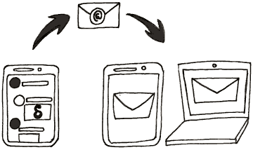

Delta Chat est une nouvelle application de chat qui envoit les messages par e-mail, chiffrés si possible avec Autocrypt. Vous n'avez pas besoin de vous inscrire nulle part, il suffit d'utiliser votre compte e-mail existant avec Delta Chat.

Avec Delta Chat, vous pouvez écrirer à toute adresse e-mail existante même si le destinataire n'utilise pas l'application Delta Chat. Pas besoin pour le receveur d'installer la même application que vous, contrairement à d'autres messageries.
Delta Chat montre automatiquement:
Les autres messages n'apparaissent pas automatiquement et se trouvent dans les demandes de contact.Si désirée, une discussion peut être commencée d'ici.
Vous pouvez définir un avatar depuis vos paramètres. Si vous écrivez à vos contacts ou les ajoutez via un code QR, ils la voient automatiquement comme votre photo de profil.
Les contacts qui n'utilisent pas Delta Chat la voit comme une pièce jointe d'e-mail.
Pour des raisons de confidentialité, personne ne voit les photos de profil jusqu'à ce que vous leur écrivez un message.
Votre photo de profil n'est pas envoyée à chaque message, mais assez régulièrement de façon que vos contacts recevrons de nouveau votre photo de profil même s'ils ajoutent un nouvel appareil.
Comme avec d'autres logiciel de messageries tel que Thunderbird, K9-Mail, ou Outlook, le programme a besoin du mot de passe afin d'envoyer des mails. Bien sur, le mot de passe est stocké seulement sur votre appareil. Le mot de passe est seulement transmis lors de la connexion à votre fournisseur de mail, qui a de toute façon à vos mails.
Si vous utilisez un fournisseur d'E-mail avec support pour OAuth2 comme gmail.com ou yandex.ru, il n'y a pas besoin de stocker le mot de passe sur votre appareil. Dans ce cas là, il suffit seulement d'un jeton d'accés.
Puisque Delta Chat a un code à source ouverte, vous pouvez regarder le code source si vous voulez vérifier que vos données d'identification sont traitées de façon sécurisée. Nous sommes heureux de recevoir des retours permettant de rendre l'application plus sûre pour tous nos utilisateurs.
En fonction du système d'exploitation utilisé, il est possible qu'on vous demande de valider des permissions pour l'application.
Delta Chat va pouvoir faire ceci grâce à ces permissions:Un groupe vérifié est une discussion qui garanti une sécurité contre un attaquant actif. Tous les messages d'une discussion vérifié sont chiffrés de bout en bout, et les membres peuvent joindre en scannant un "code QR d'invitation". Tous les membres sont alors connectés l'un l'autre à travers une chaîne d'invitation, qui garanti une consistence cryptographique contre des attaques réseaux actives ou de fournisseurs. Consultez countermitm.readthedocs.io pour la R&D derrière cette fonctionnalité.
Au temps de Déc. 2019, un “groupe vérifié” reste une fonctionnalité expérimentale. Cette fonctionnalité est continuellement amélioré et beaucoup de bogues ont été corrigé depuis son introduction en 2018. Néanmoins, il reste des soucis surtout avec des groupes larges où des inconsistances ont lieu, ou que des messages deviennent illisibles. Début 2020 un audit de sécurité est en vue, et quelques avancées autour des protocoles qr-join prennent lieu, donc il y a des chances que le label “expérimental” soit enlevé dans le futur.
Supprimez vous de la liste des membres ou supprimez le chat tout entier.
Si vous voulez joindre le groupe plus tard, demandez un autre membre du groupe de vous rajouter.Comme alternative, vous pouvez aussi "Mettre en sourdine" un groupe - faire ceci veut dire que tout les messages seront reçu et vous pouvez y écrire, mais vous n'êtes plus notifié des nouveaux messages.
Oui. Delta Chat implémente le standard Autocrypt de niveau 1 et peut donc chiffrer de bout en bout des messages avec d'autres applications compatible Autocrypt.
Delta Chat supporte aussi une forme robuste du chiffrement bout à bout qui est même sécurisé contre les attaques actives, voir les “groupes vérifiés” plus bas.
Rien.
Les applications Delta Chat (et autres applications e-mail compatible Autocrypt) partagent automatiquement les clés requises pour le chiffrement de bout en bout dès que les premiers messages sont envoyés. Après ça, tout les messages suivant sont chiffrés de bout en bout automatiquement. Si un des partenaires de discussion utilise une application e-mail sans Autocrypt, les messages d'après ne sont pas chiffrés jusqu'à ce qu'une application avec le standard Autocrypt est de nouveau utilisée.
Si vous voulez plutôt éviter les e-mails chiffrés de bout en bout par défaut, changer le paramètre Autocrypt correspondant dans “Paramètres” ou “Paramètres avancés”.
Si vous êtes dans l'entourage immédiat de votre partenaire de chat:
Si vous n'êtes pas près du partenaire de discussion, vous pouvez vérifier le status manuellement dans le dialogue “Chiffrement” (profil utilisateur sur Android/iOS ou un clic droit sur un objet de liste des chat sur l'appli de bureau:
Pour le chiffrement de bout en bout, Delta y montrera deux empreintes. Si les mêmes empreintes apparaissent sur l'appareil de votre partenaire de chat, la connexion est sécurisée.
Pour le chiffrement du transport, son status y est.
Un petit cadenas en dessous d'un message indique que le message est chiffré de bout en bout par un émetteur donné.
Si il n'y a pas de cadenas, le message est généralement envoyé non chiffré p.e. parce que vous ou l'émetteur ont désactivé le chiffrement de bout en bout, ou que l'émetteur utilise une application sans support pour le chiffrement de bout en bout.
Le standard Autocrypt est utilisé pour établir le chiffrement de bout en bout avec d'autres Delta Chat et autres applications e-mail compatible Autocrypt. Autocrypt utilise un sous-ensemble limité des fonctionnalités d'OpenPGP.
Delta Chat implémente les protocoles setup-contact et verified-group de chez countermitm afin d'achever la protection contre des attaques de réseaux actives. Ceci va au-delà de la protection opportunistique de base du niveau 1 d'Autocrypt, tout en préservant sa facilité d'utilisation.
Les discussions 1 à 1 avec un contact vérifié et un groupe vérifié ne sont pas les mêmes choses, même si il y a seulement 2 personnes dans le groupe vérifié. Une différence est que vous pouvez facilement ajouter plus de personnes dans le groupe, mais il y a aussi d'autres implications.
Les groupes vérifiés sont sécurisés en tout temps. Quelconque disruption (texte clair ou messages mal signés etc.) seront marqués et de tels messages ne seront pas montrés dans ce chat. Vous pouvez vous assurez que tous les messages dans cette discussion de vérifiés n'ont pas été lu ou altéré par des tierces parties.
Les discussions 1:1 sont opportunistiques, c'est à dire que ça permet aux gens de communiquer même s'ils changent leur client de mail, appareils, configurations etc. C'est pour celà qu'il n'y pas de marque de vérification, même si vous avez vérifié le contact.
Non, OpenPGP ne supporte pas la Perfect Forward Secrecy. La PFS marche pour une architecture orienté sur les sessions, mais l'E-mail est asynchrone par nature et souvent utilisé depuis plusieurs appareils. Celà signifie que si votre clé privée Delta Chat fuite et que quelqu'un a une copie de tout vos messages en cours de route, il sera capable de les lire.
Notez que si quelqu'un s'est emparé ou a hacké votre téléphone en état de marche, il sera capable de lire tous vos messages, que la PFS soit en place ou non. Avoir accés à l'appareil d'un membre d'un groupe exposera normalement une bonne partie du cercle social. Utiliser des adresses mails qui ne sont pas facilement remontables à de vraies personnes aide les membres du groupe à rester plus sûr en cas de la perquisition d'un appareil.
Nous sommes en train de réfléchir à des moyens de mieux protéger les communications en cas de perquisition de matériel.
Puisque Delta Chat est une messagerie décentralisé, les métadonnées des utilisateurs de Delta Chat ne sont pas stockés sur un seul serveur central. Néanmoins, elles sont stockés sur les serveurs mails de l'émetteur et du destinataire d'un message.
Chaque serveur de mail sait, en ce moment, qui a envoyé et qui a reçu un message en analysant les en-têtes non chiffrés To/Cc et donc peut déterminer quelles adresses mails font partie d'un groupe. Voyez éviter d'envoyer les en-têtes To/Cc pour les groupes vérifiés. La préocuppation principale pour les discussions opportunistiques est comment celà va impacter les autres applications de mail qui pourrait participer à ces discussions.
Beaucoup d'autres en-têtes d'e-mail, en particulier l'en-tête “Sujet”, sont protégé avec le chiffrement bout à bout, consultez également cette RFC pour l'IETF.
Oui. La meilleure façon est d'envoyer un message de configuration Autocrypt depuis l'autre client de mail. Cherchez pour quelque chose comme Commencer le transfert de la configuration Autocrypt dans les paramètres de l'autre client et suivez les instructions affichés.
Alternativement vous pouvez importer les clés manuellement dans “Paramètres” ou “Paramètres avancés” et puis “Importer les clefs secrètes”. Attention: soyez sûrs que la clé n'est pas protégé par un mot de passe, assurez-vous d'enlever le mot de passe avant.
Si vous n'avez pas de clé ou vous ne savez même pas qu'il vous en fallait une - ne vous inquiétez pas: Delta Chat en génère une en cas de besoin, pas besoin de presser un bouton pour ça.
Le problème est, avec une très grande chance, que votre clé est chiffrée ou qu'elle utilise un mot de passe, ou les deux. De telles clefs ne sont pas supportées par Delt Chat. Vous pourriez enlever le chiffrement par mot de passe et le mot de passe puis réessayer l'import de nouveau.
Au niveau du format, Delta Chat supporte les formats communs de clé privé OpenPGP, néanmoins il n'est pas certain que nous supporterons la totalité des clef privés de n'importe quelles sources. Ce n'est pas aussi l'occupation principale de Delta Chat (en pratique, la grande majorité des utilisateurs de Delt Chat n'auront pas de clefs avant d'utiliser Delta). Néanmoins, nous essayons de supporter les clés privés d'autres sources aussi bien que possible.
Enlever le mot de passe de la clé privé sera différent, en fonction du logiciel que vous utilisez pour gérer vos clés GPG. Avec Enigmail, vous pouvez définir votre mot de passe par une valeur vide dans la fenêtre de Gestion des Clés. Avec GnuPG vous pouvez le définir via la ligne de commande. Pour les autres programmes, vous pouvez trouver la solution en ligne.
Si vous voulez utiliser le même compte sur d'autres appareils, vous devriez exporter une sauvegarde depuis l'ancien appareil puis l'importer dans le nouveau:
C'est un paramètre expérimental pour certaines personnes qui expérimente avec des règles côté serveur. Tous les fournisseurs ne supporte pas ceci mais certains permettent de déplacer tous les mails avec un en-tête tel que "Chat-Version" dans le dossier DeltaChat. Normalement, l'application Delta Chat s'en occupe. .
Ne pas Surveiller la Boîte de réception est judicieux si vous avez:
Dans ce cas là, Delta Chat n'a pas besoin de surveille la Boîte de réception.
Envoyer une copie de vos messages à vous-même s'assure que vous recevez vos propres messages sur tous les appareils. Si vous avez de multiples appareils et que vous ne l'activez pas, vous voyez seulement les messages des autres personnes et les messages que vous avez envoyé depuis l'appareil en cours.
La copie est envoyée dans la Boîte de réception puis déplacée dans le dossier DeltaChat; elle n'est pas mise dans le dossier “Envoyé”. Delta Chat ne téléverse jamais quelque chose dans le dossier Envoyé car ça signifierait de le téléverser deux fois (une fois via SMTP, puis une fois dans le dossier Envoyé via IMAP
The default setting for copy-to-self is “no”.
La seule raison de regarder le dossier Envoyé est si vous utilisiez un autre programme de mail (tel que Thunderbird) en parallèle de votre application Delta Chat, et que vous voulez que votre client de messagerie participe aux discussions.
Cependant, nous recommandons d'utiliser le client de bureau Delta Chat; vous pouvez le télécharger sur get.delta.chat. L'option de regarder le dossier “Envoyé” pourrait disparaître dans le futur. Elle a été introduite à un temps où il n'y avait pas de client de bureau Delta Chat disponible sur l'ensemble des plateformes.
Certaines personnes utilisent Delta Chat comme un client de messagerie normal, et veulent utiliser la Boîte de réception pour leurs mails au lieu d'utiliser le dossier DeltaChat. Si vous désactivez “Surveiller le dossier DeltaChat”, vous devriez aussi désactiver “déplacer les messages de discussions dans DeltaChat”. Sinon, la suppression de messages dans une configuration multi-appareils pourrait ne pas marcher correctement.
Premièrement, Delta Chat ne reçoit aucun capital risque et n'est pas endetté, et n'est pas sous pression de produire d'énormes profits ou de vendre ses utilisateurs et leurs amis et familles à des publicitaires (ou pire).
Jusqu'ici les avancées de Delta Chat ont été financées par quatre sources majeures:
Le projet européen NEXTLEAP a financé la recherche et l'implémentation des protocoles de groupes vérifiés et de la configuration des contacts en 2017 et 2018.
L'Open Technology Fund a donné deux subventions. La première subvention (~$200K) de 2018/2019 a majoritairement amelioré l'application Android et nous a permi de sortir une version beta de l'application de Bureau, et a aussi ancré nos avancées de fonctionnalités dans la recherche UX dans les contextes de droit de l'homme, consultez notre rapport de réponses aux besoins (Needfinding) et UX pour en savoir plus. La deuxième subvention (~$300K) de 2019/2020 est encore en cours et nous aide à sortir des versions Delta/iOS, à convertir notre bibliothèque moteur vers Rust, et de fournir de nouvelles fonctionnalités pour toutes les plateformes. Pour en savoir plus, consultez notre blog.
La fondation NLnet nous a subventionné de 46K€ pour compléter les interfaces Rust/Python et l'encouragement d'un écosystème de Chatbot.
En dernier mais de loin pas des moindre, quelques enthousiastes et experts bénévoles qui ont contribué et contribue au développement de Delta Chat sans recevoir d'argent, ou seulement de petites sommes. Sans eux, Delta Chat n'en serait pas où il en est aujourd'hui, pas d'un chouïa.
Le financement mentionné ci-dessus a été organisé par merlinux GmbH à Freiburg (Allemagne) puis ensuite distribué à presque une douzaine de contributeurs.
Le financement pour 2020/2021 est encore a déterminer. Nous sommes en train de poursuivre différentes opportunités avec de différentes organisations et partenaires. Nous sommes aussi en train de réfléchir au fait de demander des dons. En fait, nous avons commencé à titre d'expérimentation un petit compte de don Liberapay pour Delta Chat mais nous ne l'avons pas encore publié. Il y a eu aussi jusqu'ici autour de 3-4K donnés à Bjoern (l'auteur original de Delta Chat) en don Paypal et Bitcoin.